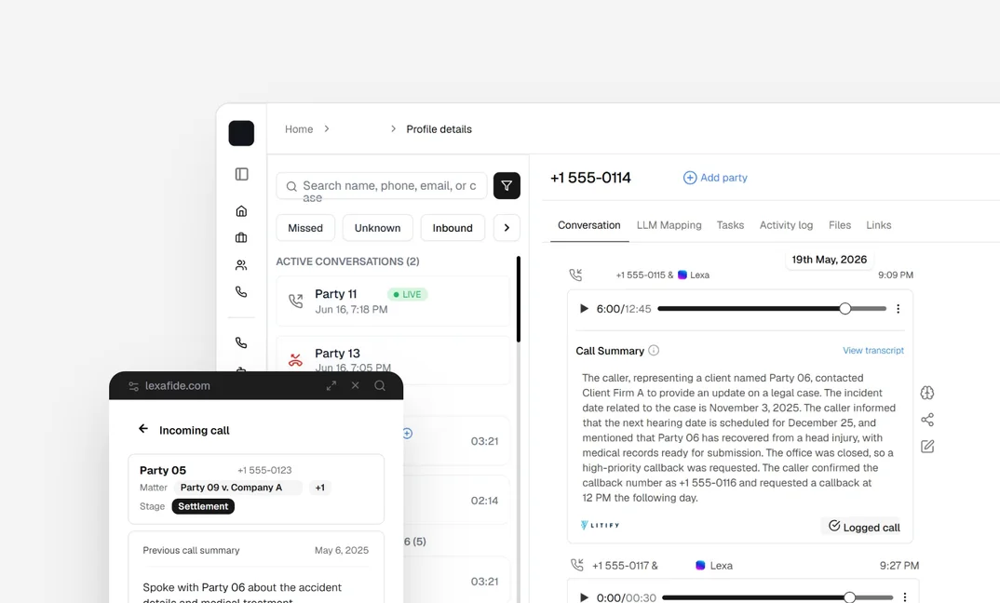

01 · Industry, 2026
Lexafide
Designing for decisions, not automation
Human–AI workflows for an AI call-handling platform used by personal-injury law firms in the US. I joined as a UI/UX product design intern and stayed on as a part-time product designer. Some of it is live: Call Intelligence, notifications and Comms Log navigation.